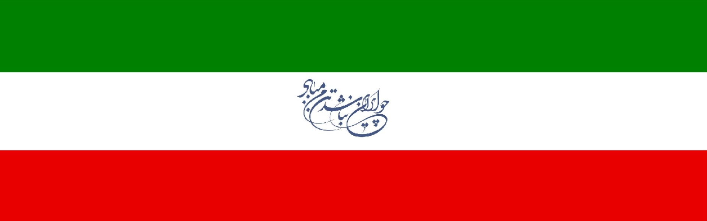
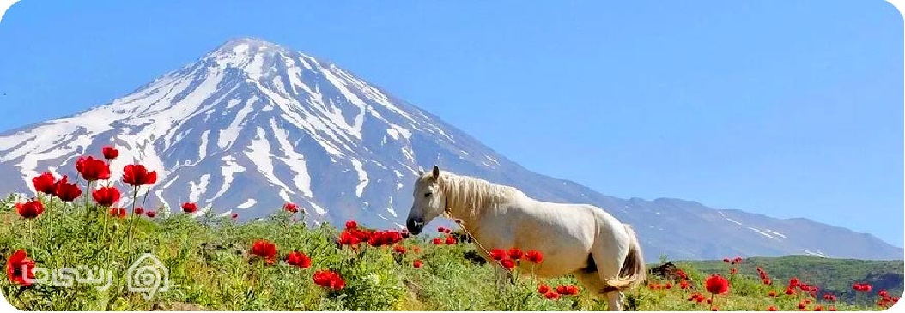

I R A N
معرفی ایران زیبا تصاویری از ایران زمین اشعاری در وصف ایران
آیا تاکنون به این فکر کرده اید که به عنوان یک ایرانی باید چه اطلاعاتی در خصوص کشور خود داشته باشید؟ موقعیت جغرافیایی، کشورهای همسایه ایران، ایران در زمان باستان، استان های ایران، پایتخت کشورمان، فرهنگ و آداب رسوم مردم در نقاط مختلف، زبان، مذهب، آب و هوا، اقتصاد، شهرهای توریستی و مهم ترین ویژگی های این کشور در میان گردشگران خارجی مهم ترین نکاتی هستند که باید در خصوص کشور خودمان بدانیم. بنابراین پیشنهاد می کنیم با ادامه این مقاله ما را همراهی کنید.
مساحت و میزان آمار جمعیت کشور ایران
فرهنگ و آداب و رسوم مردم ایران

« معرفی کشور ایران »
کشور ایران با تاریخچه ای بسیار کهن در حوزه تمدنی ماوراءالنهر و بین النهرین و همچنین در قلب فلات ایران قرار دارد. این کشور در بخش غربی بزرگ ترین قاره جهان و در منطقه ای نفت خیر به نام خاورمیانه واقع شده است. ایران در بخش های شمالی با کشورهای ترکمنستان، جمهوری آذربایجان، ارمنستان و دریای مازندران هم مرز است. همچنین از جنوب با خلیج فارس و دریای عمان و کشورهای حوزه خلیج فارس، مرز آبی دارد. در بخش های غربی با کشورهای عراق و ترکیه و از شرق با پاکستان و افغانستان همسایه است. ایران به عنوان یک کشور مستقل دارای نظام سیاسی جمهوری با تاکید بر دین اسلام است و همانند تمام کشورهای استقلال یافته دارای تیم های ورزشی باشگاهی و ملی، نظام اداری و اقتصادی مشخص، ارگان های مشخص و طبقه بندی شده به همراه هزاران قوانین مدون و مکتوب برای سیستم و دستگاه قضایی است.
« ایران باستان »
ایران باستان ملقب به سرزمین پارس یکی از قدیمی ترین نقاطی است که نشانه هایی از سکونت بشر در آن به چشم می خورد. حتی نشانه هایی از سکونت انسان ها در دوره پارینه سنگی نیز در این کشور مشاهده شده است. قدمت سکونت در این کشور به ده هزار سال قبل از میلاد می رسد. پادشاهی عیلام یکی از پیشرفته ترین پادشاهی های دوران باستان است که در حدود 7200 سال قبل بر سرزمین پارس حکمرانی می کردند و بعدها توسط سومری ها و سپس توسط آشوری ها و سرانجام توسط مادها فتح شدند. انقراض حکومت ماد با تاسیس بزرگ ترین امپراتوری تاریخ در کل جهان و ایران یعنی امپراتوری هخامنشی همراه بود که بزرگ ترین نهادهای سیاسی و اجتماعی در ایران باستان را شکل داد و بزرگترین آزادی دین و مذهب در تاریخ جهان را به دنبال داشت، اما متاسفانه این امپراتوری عظیم و شکوهمند توسط اسکندر مقدونی فتح گردید و پس از آن سرزمین پارس ها در دست سلسه های سلوکی، اشکانی و پارتی قرار گرفت. سلسه ساسانی آخرین دولت سازمان یافته ای بود که پیش از ورود اعراب و مسلمانان در ایران حکمرانی کرد و تاریخ ایران باستان پیش از اسلام را به اتمام رساند.
« کشور ایران چند استان دارد؟ »
تقسیمات کشوری ایران در طی چند دهه اخیر دارای تغییرات مسجلی بوده است. در سال 1316 ایران تنها ده استان داشت، اما تعداد آن ها در سال 1383 به سه استان افزایش یافت. در این سال بخش های مختلف کشور به 362 شهرستان، 918 بخش، 2430 دهستان، 1060 شهرستان با مرکزیت تهران تقسیم شد تا اینکه در سال 1389، استان البرز نیز به استان های ایران اضافه شد و تعداد آن ها را به سی و یک عدد رساند. استان های ایران به ترتیب حروف الفبا عبارتند از: آذربایجان شرقى، آذربایجان غربى، اردبیل، اصفهان، البرز، ایلام، بوشهر، تهران، چهارمحال و بختیاری، خراسان جنوبى، خراسان رضوى، خراسان شمالى، خوزستان، زنجان، سمنان، سیستان و بلوچستان، فارس، قزوین، قم، کردستان، کرمان، کرمانشاه، کهکیلویه و بویراحمد، گلستان، گیلان، لرستان، مازندران، مرکزى، هرمزگان، همدان، یزد.
« پایتخت ایران »
پایتخت ایران در دوران مختلف تاریخ تغییرات بسیاری داشته است. شهرهای شیراز، اصفهان، یزد و تبریز، شهرهایی هستند که دوره های قبل به عنوان پایتخت سیاسی ایران انتخاب شده بودند، اما بیش از یک قرن است که شهر تهران به عنوان مرکز استان تهران، پایتخت سیاسی، اقتصادی و صنعتی ایران است. تهران هم اکنون پرجمعیت ترین شهر ایران است که بیش از 8 میلیون و 500 هزار نفر جمعیت دارد و این جمعیت صرفا مربوط به شهر تهران -نه استان تهران- می باشد. به همین علت امروزه از استان تهران به عنوان بیست و چهارمین شهر پرجمعیت جهان و پرجمعیت ترین شهر باختر آسیا نام می برند که سومین شهر پرجمعیت خاورمیانه نیز قلمداد می شود.
« مساحت و میزان آمار جمعیت کشور ایران »
ایران هجدهمین کشور جهان از نظر مساحت و وسعت است. مساحت کشور ما یک میلیون و 648 هزار و 195 کیلومترمربع است که جمعیت ایران بالغ بر 75 میلیون نفر را در خود جای داده است. کشور ایران در منطقه خاورمیانه و منطقه اوراسیا از یک موقعیت استراتژیک برخوردار بوده و همواره به عنوان پل ارتباطی شرق و غرب (کشورهای نیمه شرقی و غربی جهان) مورد توجه بوده است به صورتی که در دوران گذشته بخش قابل توجهی از جاده مبادلاتی و تاریخی ابریشم از ایران عبور کرده بود.
« فرهنگ و آداب و رسوم مردم ایران »
فرهنگ و آداب رسوم یک ملت را می توان در موقعیت های اجتماعی، خانوادگی و وضعیت پوشش آن کشور مشاهده کرد. (تعارف کردن) یکی از مهم ترین عادات اجتماعی مردم ایران شمرده می شود که در بسیاری از موقعیت ها مشاهده می گردد. دست دادن و روبوسی کردن نیز عادت دیگری است که در سالیان اخیر و به خصوص با شیوع کرونا در حال کاهش است. احترام به بزرگ تر ها در جمع های خانوادگی و در میان فامیل هم یک فرهنگ دیرینه می باشد که تاکنون ارزش خود را حفظ کرده است. جایگاه پدر و پدربزرگ نیز به عنوان بزرگ خانواده و خاندان همچنان محفوظ است. در میان ایرانیان مادران خانواده از نفوذ بسیار زیادی برخوردار بوده و نقش قابل توجهی در تعیین مسیر آینده فرزندان خود و بخصوص در امر ازدواج دارند. جشن چهارشنبه سوری، نورزو، سیزده بدر و شب یلدا به عنوان مهم ترین جشن های ایرانی شناخته می شوند که البته بعد از ورود اسلام باید به جشن های دیگری همانند عید قدیر و عید قربان نیز اشاره کرد. اعیاد مذهبی در میان ایرانیان بسیار محترم شمرده می شود و روز شهادت ائمه و بزرگان اسلام نیز مورد توجه است، اما متاسفانه بسیاری از مناسبت های تاریخی در ایران به دست فراموشی سپرده شده اند و امروزه بسیاری از مردم اطلاعی از مناسبت های خاص در تاریخ بابلی ندارند. ادبیات ایران تاریخ گسترده ای دارد و بزرگانی چون فردوسی، سعدی، حافظ، مولوی، نظامی، خیام اشعار ماندگاری را سروده اند که هرگز ارزش معنوی خود را از دست نخواهند داد. هنرهایی همچون معماری، سفالگری، خوشنویسی، بافندگی، نقاشی و موسیقی در میان ایرانیان ارزش بسیاری داشته است و امروزه شاهد حفظ این ارزش ها توسط برخی از سازمان ها و اشخاص باتجربه در سراسر کشور هستیم. در این میان پوشاک زنان یکی از مهم ترین ارکان آداب و رسوم و فرهنگ جامعه را نشان می دهد. پوشاک زنان ایرانی در طول تاریخ یکسان نبوده است. در دوران مادها پوشاک زنان تفاوت چندانی با پوشاک مردان نداشت. زنان دوران هخامنشی لباس های فاخر به تن می کردند و اصولا لباس های دوخته شده به لباس ملکه ها در دوران بعد شباهت داشت. پوشاک زنان اشکانی به صورت پیراهنی بلند تا روی زمین، گشاد، پرچین، آستین دار و یقه راست بود که پیراهن دیگری را روی آن می پوشیده اند. لباس زنان در دوره ساسانی هم تقریبا به این صورت بود اما آن ها چین های اضافه لباس را با نوار بلندی در زیر سینه می بستند. پوشاک زنان در دوران زندیه قدی تنگ تر و بدن نما شد و عموما از پارچه های ابریشم و نخی استفاده می کردند. پیراهن زنان در دوران قاجار نیز به همین شکل بود و البته دامن ها کوتاه تر شد. در این دوران استفاده از زیورآلات بر روی لباس رواج زیادی پیدا کرد. دوران پهلوی یک جنبش خاص پدید آمد و ظاهر مردم به شکل و شمایل فرنگی ها شباهت بیشتری داشت. این جنبش که سعی داشت ظاهر مردم جهان را در یک مسیر خاص با عنوان جهانی شدن قرار دهد در ایران با شکست مواجه گردید و بعد از انقلاب، حجاب با جزییات بیشتری در ایران اجرا شد. چادر، مقنعه و مانتو های بلند و گشاد به عنوان متداول ترین پوشش مردم در اوایل انقلاب انتخاب گردید، اما بعدها از شدت آن ها کاسته شد و امروزه شاهد نوعی مدرن گرایی در عرصه حجاب اسلامی در ایران هستیم.
« اماکن تاریخی و توریستی ایران »
ایران با تاریخ کهن و دوران باشکوه خود در طول تاریخ دارای آثار باستانی و جاذبه های گردشگری بسیار زیادی است. جاذبه های طبیعی نیز رکن دیگریست که باید به آن ها اشاره کرد. مهم ترین شهرهای گردشگری و توریستی ایران به همراه مهم ترین جاذبه های آن ها را می توان به صورت ذیل بیان نمود.
شیراز - اصفهان - تهران - تبریز - یزد - مشهد - منطقه آزاد کیش - قشم